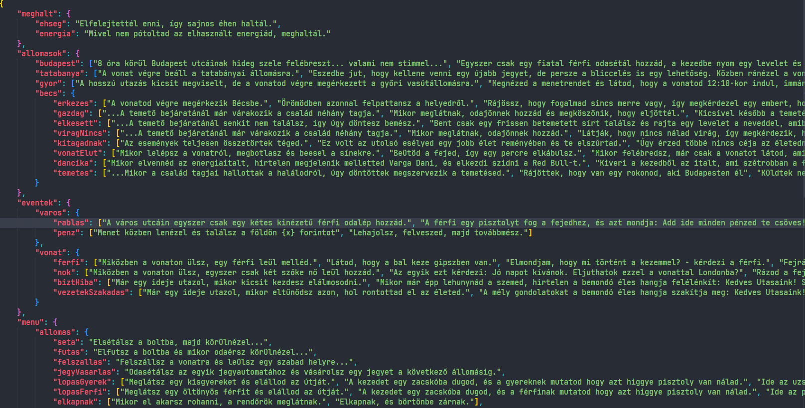

- Development -
Itt találhatóak a fejlesztői dokumentációk.
*A képek a fejlesztés során készültek, így azok nem feltétlen tükrözik a játék jelenlegi forráskódját.
- Dialogues -
A dialógusok túl hosszúnak bizonyultak, így úgy döntöttünk, hogy egy külön JSON fájlba írjuk őket.
Így lehetőségünk nyílt egyéb funkciókra, mint például a karakterenkénti kiírás.


Az efajta animációkkal az a probléma, hogy a Windows CMD nem tudja őket szépen kivitelezni.

Ezért a modernebb Windows Terminal-t használtuk helyette, ami már képes erre.

- Python -
Requirements
A fejlesztés során felhasznált és játék futtatásához szükséges pip csomagok:
Idő
Az idő a játék során folyamatosan telik, tetteinkkel pedig tovább gyorsítjuk (vagy lassítjuk) azt.
Layout
A rich librarynek köszönhetően a játék grafikai felépítése
egy táblázat alapú rendszerben készült, amelyet a terminál folyamatosan frissít.